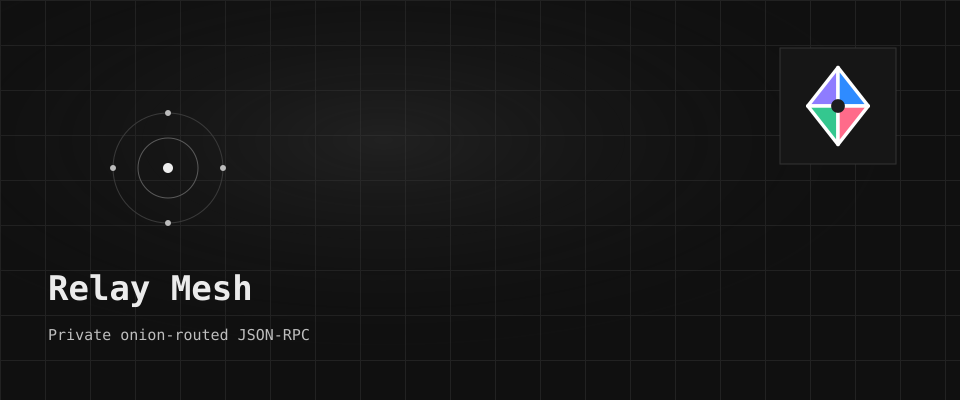
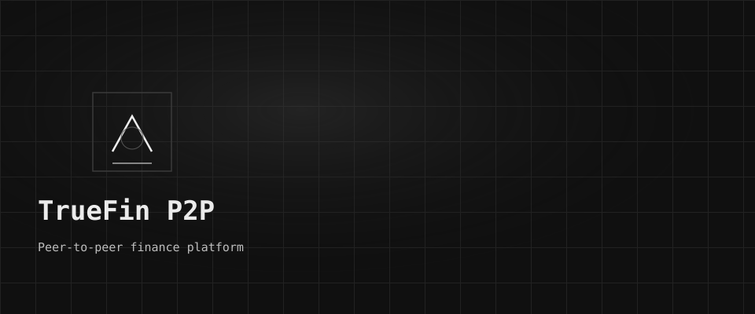
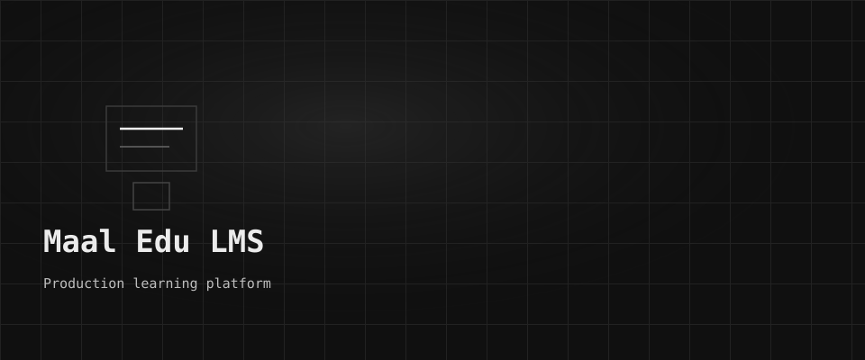
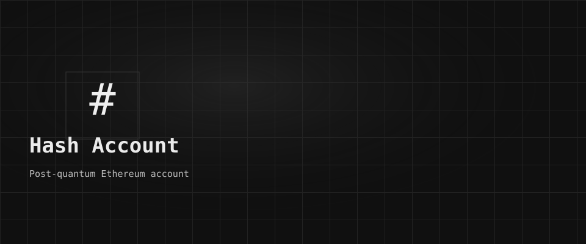
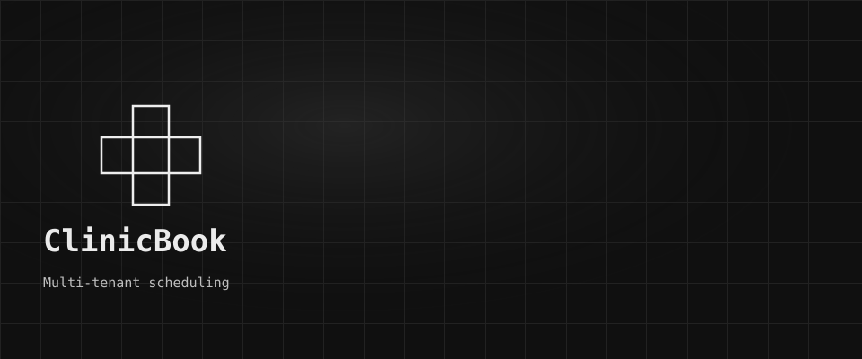
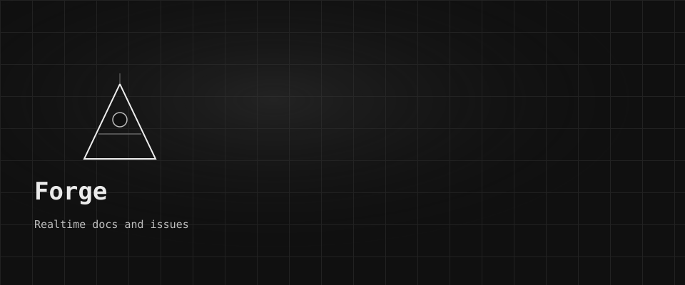
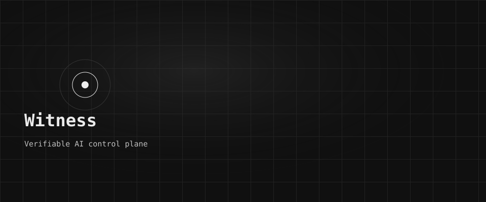
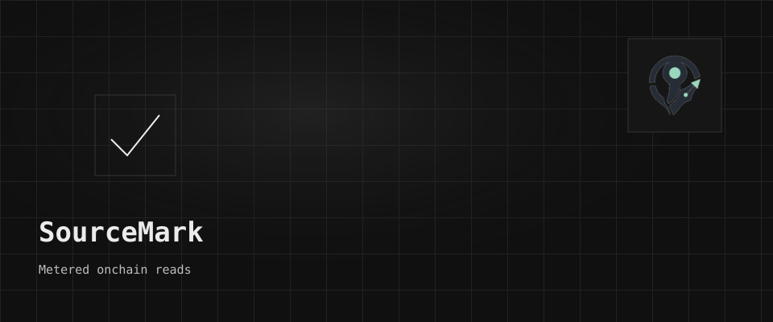

Projects

Relay Mesh
3-hop onion-routed relay network for private JSON-RPC — no single hop sees both client identity and plaintext.

TrueFin P2P
Peer-to-peer finance platform with secure payment flows, wallet integration, and smart contract-backed settlement.

Maal Edu LMS
Production LMS with course enrollment, JWT auth, role-based access, and progress tracking for live learners.

Hash Account
Post-quantum Ethereum account using hash-based one-time signatures — no ECDSA keys required.

ClinicBook
Multi-tenant scheduling for clinics, dental practices, physios, gyms and tutors with Stripe subscriptions.

Forge
Realtime docs and issue tracking for product teams — specs live next to the issues that implement them.

Witness
Control plane for verifiable AI outputs — attestations, trust policy, replay protection, and audit log.

SourceMark
Metered onchain read layer that declines to answer when independently pinned deployments disagree.